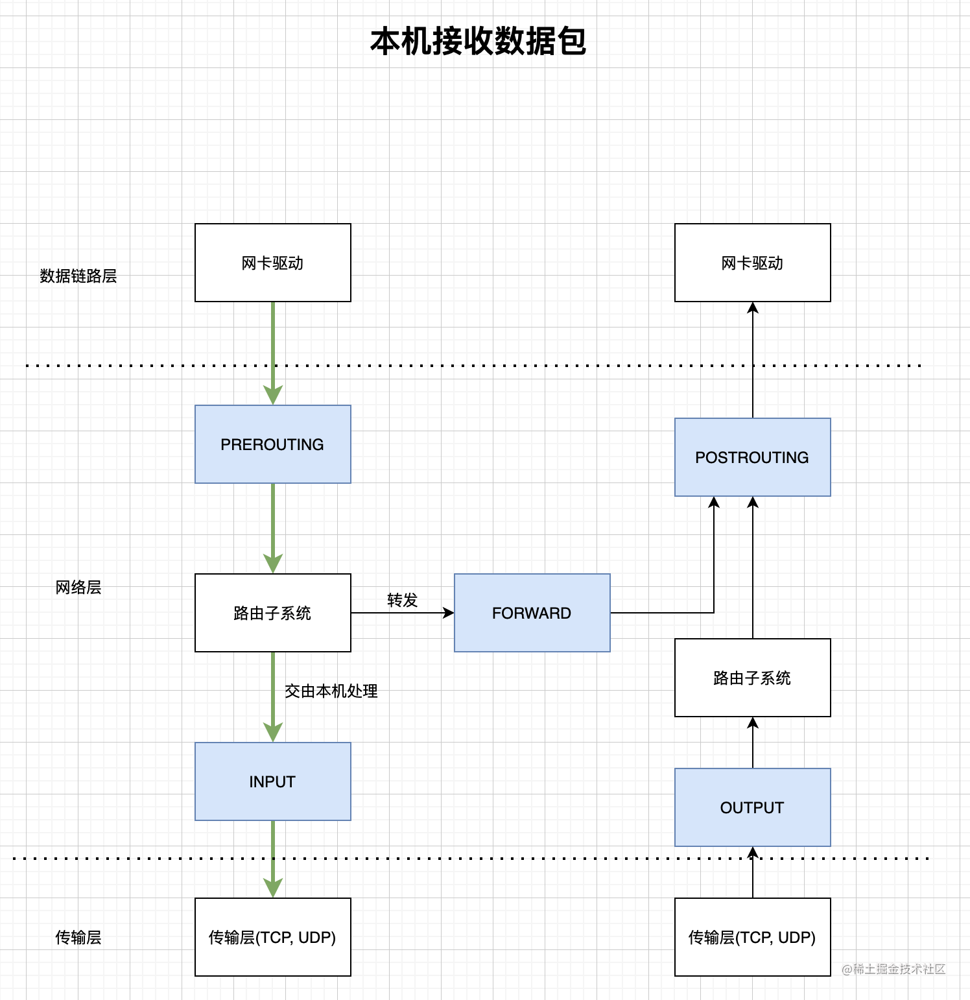
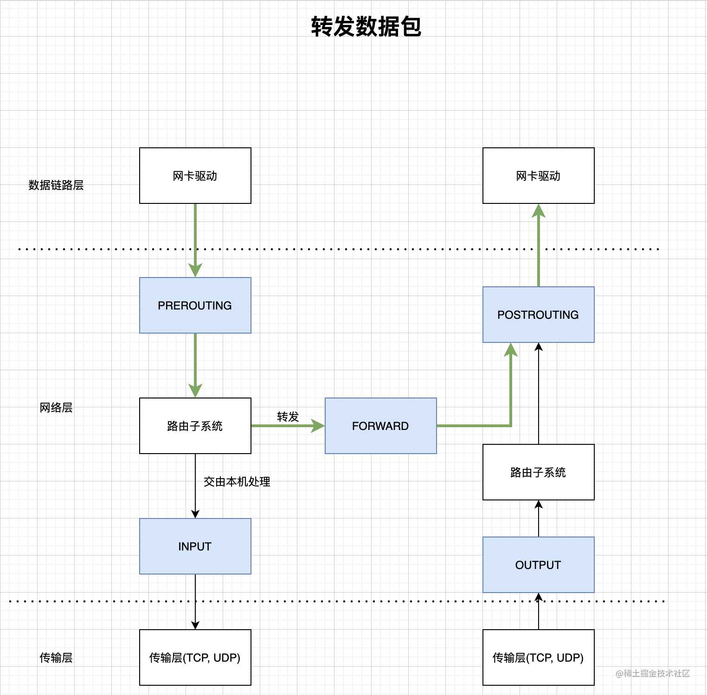

OSI七层和Netfilter
OSI七层模型
- veth pair和Linux bridge
- 在Linux内核实现中，链路层协议靠网卡驱动来实现；
- 内核协议栈来实现网络层和传输层，所以很多资料中将网络层和传输层统称为Linux网络协议栈。

Netfilter Hook
- Netfilter子系统就是我们平时所说的防火墙，通常我们使用管理工具iptables来配置Netfilter Hook
- 本机接收数据包和转发数据包
- 收到skb，若mac地址不是该网卡且没有开启混杂模式，直接丢弃
- 经过RREROUTING，可能进行目的地址修改(DNAT)
- 路由决策：决定是发给本地进程还是转发给其他机器
- 发给本地：经过INPUT，然后发给进程
- 发给别人(或其他network namespace)：经过FORWARD，然后POSTROUTING，可能进行源地址转换(SNAT)，然后发给网卡驱动
- 本机发送数据包
- 网络层收到传输层的skb
- 经过OUTPUT
- 路由决策：用哪个网卡，目标mac地址是多少
- 经过POSTROUTING，可能进行源地址转换(SNAT)，然后发给网卡驱动



家用路由器
- 家用路由器可以看成一个路由器和一个交换机的组合，如下图所示